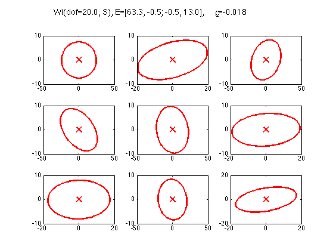
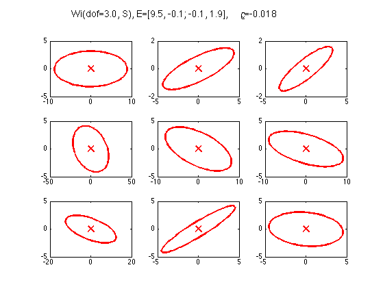
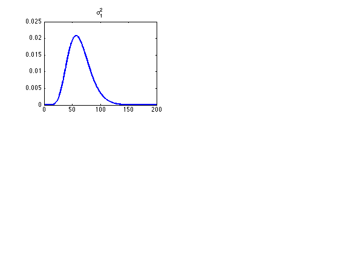
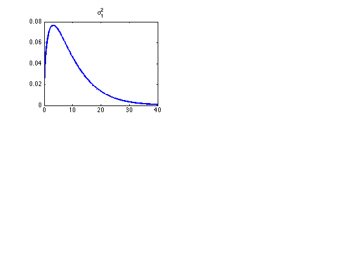
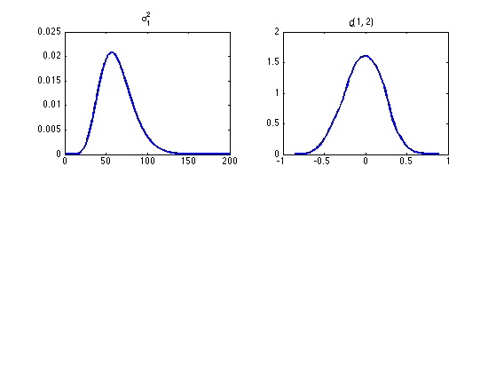
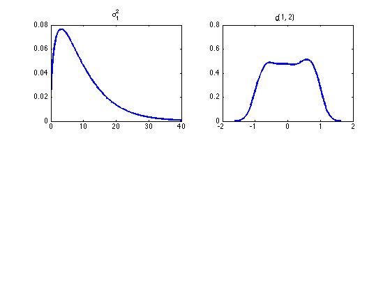
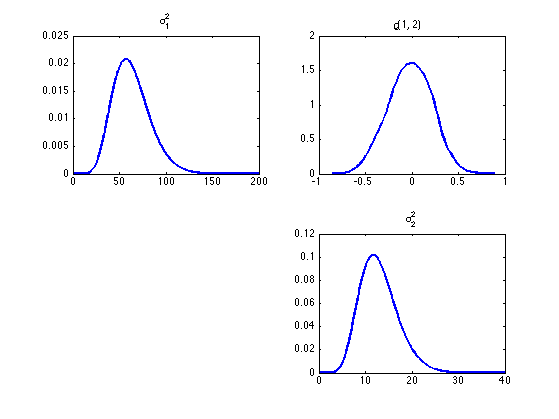

Plot Some Wishart Distributions
PMTKneedsStatsToolbox ksdensity
Contents
% This file is from pmtk3.googlecode.com requireStatsToolbox setSeed(2); S = [3.1653, -0.0262; -0.0262, 0.6477]; dofs = [20 3]; wiModel.Sigma = S; nr = 3; nc = 3; nsamples = 9; for i=1:length(dofs)
wiModel.dof = dofs(i);
M = wiModel.dof*wiModel.Sigma; % mean
R = cov2cor(M);
S = wishartSample(wiModel, nsamples);
figure();
for j=1:nsamples
subplot(nr, nc, j);
gaussPlot2d([0 0], S(:, :, j));
end
t = sprintf(...
'Wi(dof=%.1f, S), E=[%.1f, %.1f; %.1f, %.1f], %s=%.3f', ...
dofs(i), M(1,1), M(1,2), M(2,1), M(2,2), '\rho', R(1,2));
suptitle(t);
printPmtkFigure(sprintf('WiDof%dEllipse', dofs(i)));
  Plot marginals
marg1.a = wiModel.dof / 2;
marg1.b = 1/(2*wiModel.Sigma(1, 1));
marg2.a = wiModel.dof / 2;
marg2.b = 1/(2*wiModel.Sigma(2, 2));
figure();
xs = {(0.1:0.1:200)', (0.1:0.1:40)'};
subplot(2, 2, 1);
plot(xs{i}, exp(gammaLogprob(marg1, xs{i})), 'linewidth', 2.5);
title(sprintf('%s_1','\sigma^2'));
  subplot(2, 2, 2);
n = 1000;
Rs = wishartSample(wiModel, n);
for s=1:n
Rs(:, :, s) = cov2cor(Rs(:, :, s));
end
[f, xi] = ksdensity(squeeze(Rs(1, 2, :)));
plot(xi, f, 'linewidth', 2.5);
title(sprintf('%s(1, 2)','\rho'));
  xs = {(0.1:0.1:40)', (0.1:0.1:10)'};
subplot(2, 2, 4);
plot(xs{i}, exp(gammaLogprob(marg2, xs{i})), 'linewidth', 2.5);
title(sprintf('%s_2','\sigma^2'));
printPmtkFigure(sprintf('WiDof%dPlot', dofs(i)));
 
end
placeFigures();